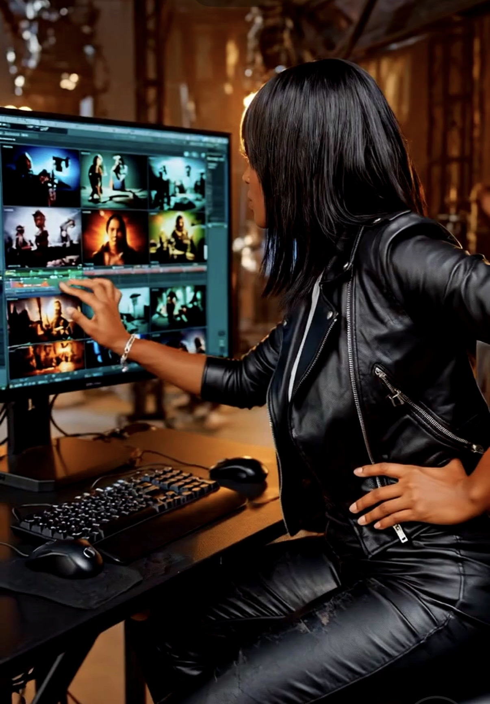

Scientific Visualization
DATA PIPELINE
Bridging clinical MRI datasets to research-ready 3D digital assets through precise volumetric segmentation and advanced scalar rendering.

Volumetric Segmentation
Tool: 3D Slicer
Processing raw DICOM MRI data to isolate intracranial pathology. By utilizing thresholding and manual tracing, I define the volume of the tumor (ICD-10: C71.9) for precise 3D reconstruction.
Scalar Visualization
Tool: ParaView
Segmented data is imported for high-performance rendering. I apply scalar opacity mapping and custom transfer functions to visualize tissue density variations within the pathology.
Technical Synthesis
Tool: Audacity | 4K Render
Final integration of 4K cinematic rotational renders with clinical technical narration. This workflow ensures alignment with diagnostic informatics and AI training data standards.